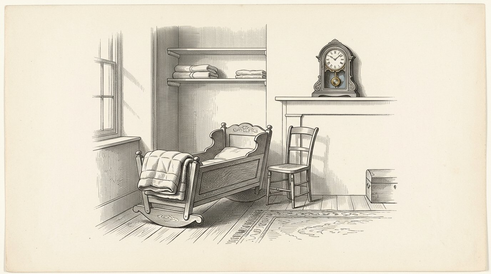
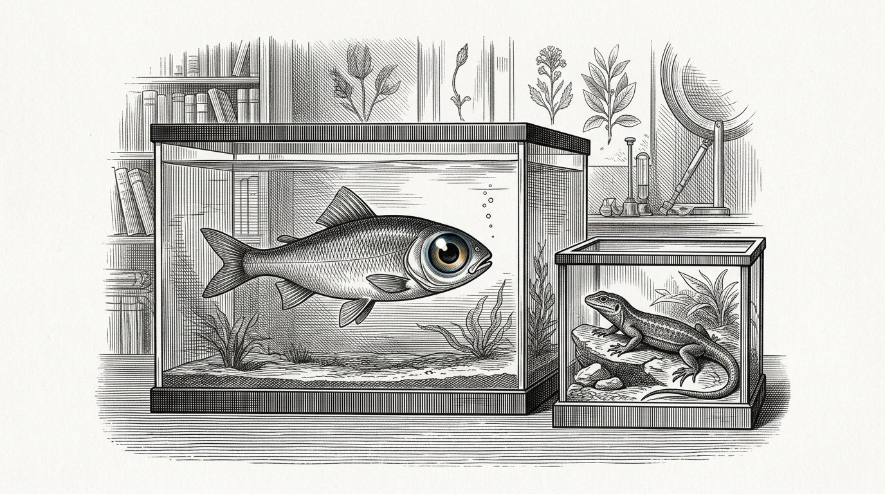
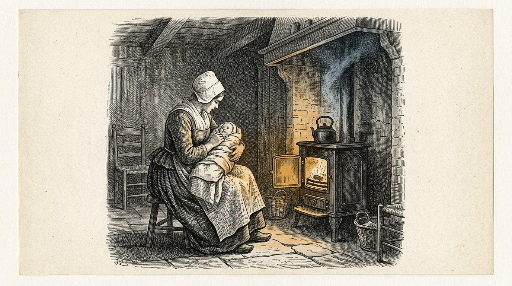
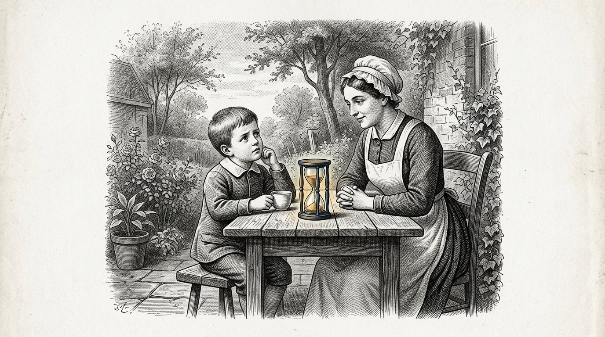
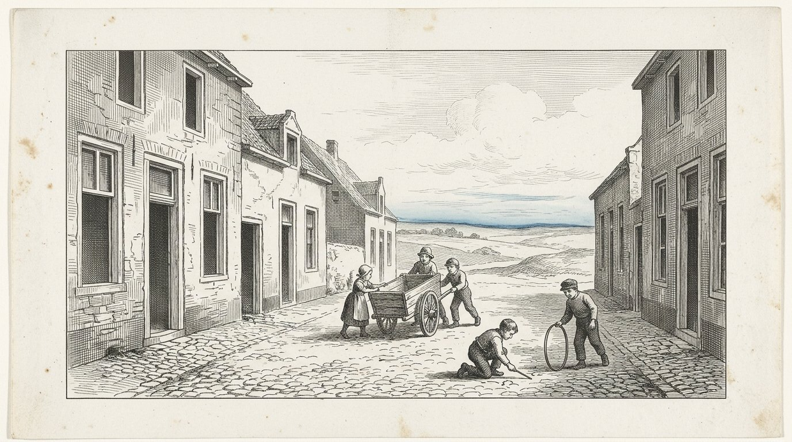
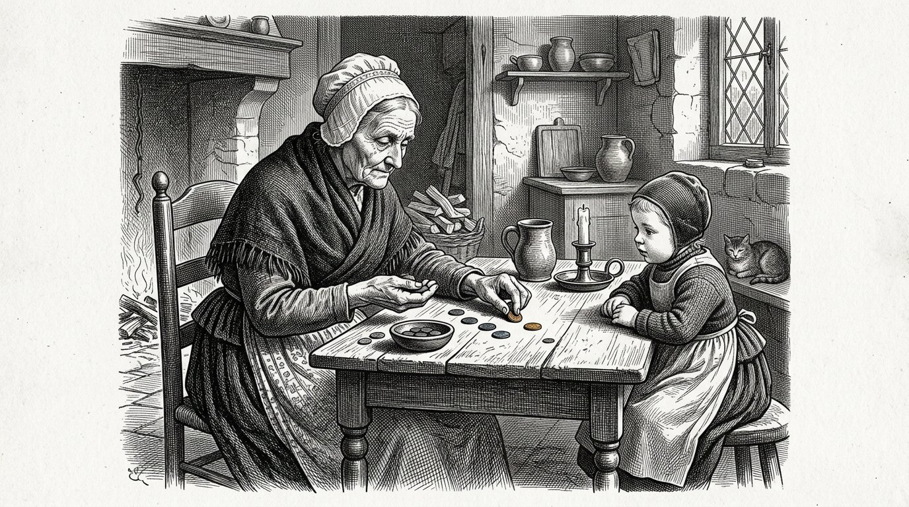
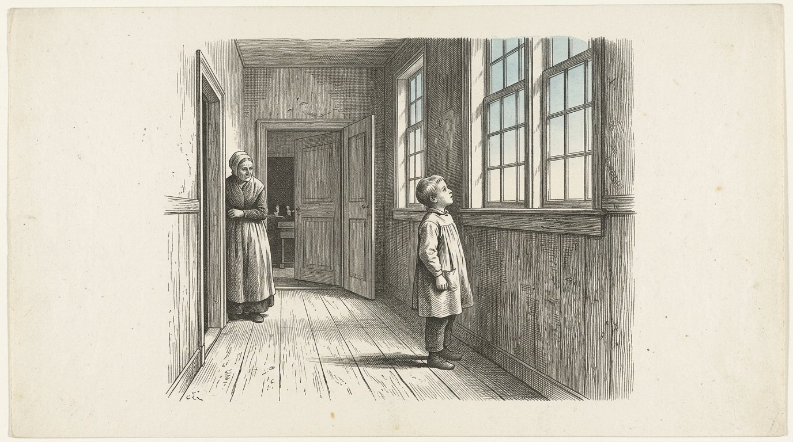
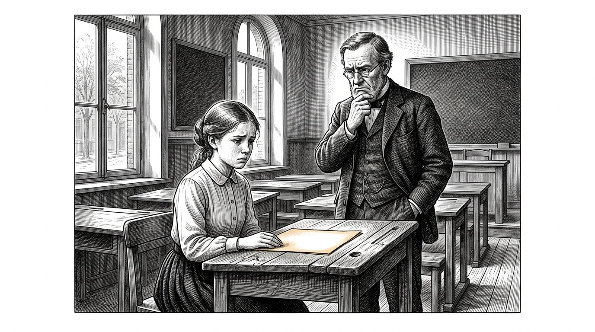
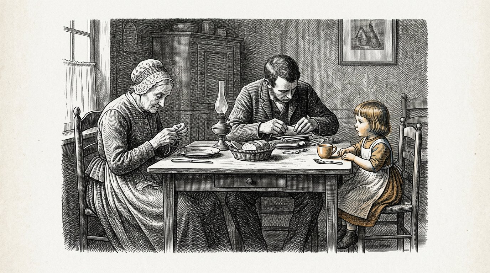

КНИГА ТРЕТЬЯ
Косарис
Книга Антеи

КНИГА ТРЕТЬЯ
Книга Антеи
Это третья книга Косариса, и начата она была не мной.
Она начинается с четырнадцати страниц, которые я написала, когда мне было двадцать лет, — о моей бабушке Демире и о старике, который по четвергам приходил в пекарню. Я положила их в ящик и пятьдесят два года к ним не прикасалась. Когда я их нашла, они показались мне слишком уверенными. Я ничего в них не изменила. Я приписала под ними одну фразу и поставила дату.
Первая книга — о четырёх столпах. Вторая — о различии между тем, что установлено, и тем, что принято считать. Эта книга — о лежащем под ними вопросе: как вырастить человека так, чтобы он мог это вынести.
Человек — не существо в единственном числе. Он — нагромождение слоёв, в том порядке, в каком они возникли, и каждый слой может возникнуть лишь тогда, когда затвердел лежащий под ним. Эта книга следует этому порядку и ничего не пропускает.
Семь дней. Столько нужно, чтобы яйцо поняло, что оно продолжает свой путь. За эти дни внутрь ничего не поступает. Создаётся лишь форма.
Семь месяцев. Рептилия. Ребёнок живёт в двух измерениях. Это не метафора: у рыбы и ящерицы глаза расположены по бокам, они видят вокруг себя, но их два глаза не работают сообща, и глубины нет. Плоско и всё одновременно. За эти месяцы ребёнок учится самостоятельно управлять жизненными функциями: дышать, сохранять тепло, избегать опасности. Никакой привязанности, никакой эмпатии, никакого самоузнавания — зато всё цело и надёжно на собственном уровне. Через семь месяцев этот слой завершён, и всё же ребёнок обычно рождается лишь около девятого месяца. За эти два месяца ничего нового не добавляется. Слой закрепляется. Слой готов не тогда, когда он работает; он готов тогда, когда он выдерживает.
Семь лет. Млекопитающее. Глаза выдвигаются вперёд, два изображения начинают работать вместе, и из этого возникает глубина — третье измерение. А вместе с глубиной приходит чувство. Оно затвердевает не как правило и не как знание, а как пережитая самоочевидность, и затвердевает лишь рядом с одним присутствующим человеком, который остаётся рядом годами. То, что здесь не затвердело, позже уже нигде не затвердеет.
Чего ещё не должно быть в эти семь лет, так это времени. У млекопитающего есть временные рефлексы — возвращающийся ритм, голод в определённый час, собака, вовремя стоящая у двери, — но планировать оно не умеет. Оно не может знать, что завтра будет иначе. Поэтому эти семь лет должны проходить без ощущения времени: никаких часов, никакого календаря, никакого «потом», никакой цели через пять лет. За эти годы должна заложиться рефлекторная основа без времени, и возникает она лишь тогда, когда мы держим время за её пределами.
Затем человек. Только теперь добавляется четвёртое измерение: время. Ребёнок может думать вперёд, к дню, которого ещё нет, и уже сейчас делать для него что-то. С этого мгновения внутрь можно впустить всё, что мы семь лет удерживали снаружи, и оно входит легко, потому что есть на что его наложить. Чувство и разум идут рядом — до четырнадцати и до двадцати одного года. В четырнадцать открывается способность смотреть на собственное мышление. В двадцать один разум может взять верх — но лишь настолько, насколько под ним есть достаточная чувственная основа, чтобы его вынести.
Но у человека больше четырёх направлений. Их семь: три направления пространства, время, а затем ещё величина, ценность и количество. Величина — это знать, насколько велико что-либо, а не только уметь вычислить, насколько оно велико. Ценность — это то, чего что-либо стоит, независимо от того, измеряет ли это кто-нибудь. Количество — это способность чувствовать, что один случай ещё ничего не значит, а тысяча случаев уже что-то значат.
Эти последние три в нашем образовании не закладываются. Их отнимают. Школа сводит всё к одной мере, называет ценностью то, что помещается в табель, и учит считать числа, ни разу не связывая их с каким-либо чувством. Ребёнок выходит оттуда с четырьмя направлениями и думает, что это всё.
Именно последнее условие — причина, по которой существует эта книга. Разум без лежащей под ним чувственной основы не берёт верх. Он движется вслед за тем, кто последним с ним говорил.
В наши дни вторая линия проходит гораздо позже в жизни, а у многих не появляется вовсе. Не потому, что люди учатся меньше. А потому, что годы, в которые человеку положено ошибаться, заполняют учёбой, и потому, что отсутствует чувственная основа, на которую могли бы опереться эти ошибки. Кто сделал слишком мало ошибок, тому не на что опираться в суждениях.
Семьдесят семь. Это не возраст, в котором человек чему-либо учится. Это срок, который проходит, прежде чем то, чему научился один человек, возвращается в ком-то, кто его не знал.
Я была медсестрой сорок шесть лет. Я видела, как родились сто девятнадцать детей, и не вырастила ни одного. Это недостаток этой книги, и я предпочитаю сказать об этом заранее, а не ждать, пока кто-нибудь обнаружит это потом.
Где я чего-то не знаю, там так и сказано.
Часть 1

Где рассказывается о том, что Антея записала в двадцать лет о своей бабушке и о старике, и о том, что пятьдесят два года спустя дописала под этим.

Я видела цвета вокруг людей. Долгое время я никому об этом не говорила: мать это тревожило, а бабушку — нет, и с бабушкой мне было легче.
Я не знаю, что это было. Позже я изучала это и так и не нашла для него подходящего названия. У врачей есть для этого названия, но они не передают сути.
Но я знаю, когда это исчезло. Оно исчезло, когда мне было четырнадцать, зимой, когда умер мой дед, и больше никогда не возвращалось.
Я тридцать лет горевала об этом.
Теперь я стара и думаю об этом иначе. Я больше не думаю, что что-то утратила. Я думаю, что поверх чего-то появилось ещё кое-что.
Появилось нечто, что стало всматриваться в то, что я видела, и спрашивать, правда ли это.
Это нечто больше не уходило. Оно и сейчас здесь, и в эту минуту смотрит на это предложение и спрашивает, знаю ли я это наверняка.
Я не уверена.
Но за пятьдесят лет я видела то же самое у пятнадцати детей — примерно в одном и том же возрасте, — и это не доказательство, но и не ничто.
Антея пишет:Появляется нечто, что всматривается. Это не конец детства. Это второй слой, который открывается.

Моя бабушка взвешивала каждый мешок муки. Я видела, как она делала это пять тысяч раз, и никогда не смотрела на это так, как смотрят на нечто необычное: в детстве всё бывает именно так.
Я думала, что взвешивание — часть выпечки.
Она никогда не объясняла мне, зачем это делает. Никогда не говорила, что это важно или что я должна это запомнить.
Она взвешивала, а я стояла рядом.
Когда мне было семнадцать и я начала работать в клинике, в первый же день я пересчитала флакончики в шкафу, и медсестра спросила, зачем я это делаю, а я сказала, что не знаю.
Я не знала.
Лишь гораздо позже я поняла, что вынесла это из пекарни.
Вот чему это меня научило — и это самое неприятное во всей этой книге: самому важному, чему научила меня бабушка, она меня никогда не учила.
Она делала это у меня на глазах.
Всё, что она объясняла мне словами, намереваясь, чтобы я это запомнила, я забыла.
Антея пишет:Ребёнок перенимает не то, что вы говорите. Он перенимает то, что вы делаете, пока говорите что-то другое.

Старик приходил в пекарню по четвергам, и я часто была там, потому что мне нравилось там бывать.
Он всегда спрашивал одно и то же, но каждый раз иначе.
Он никогда не спрашивал, что я знаю. Он спрашивал, откуда я это знаю.
Когда мне было восемь, меня это раздражало: я хотела рассказать, что знаю, а знала я много.
Когда мне было одиннадцать, я стала заранее обдумывать ответ. Я стала думать, что отвечу, если он спросит, и из-за этого стала иначе смотреть на то, что видела.
Вот что он делал. Он никогда ничему меня не учил. Три года подряд он задавал мне один и тот же вопрос, пока я сама не стала задавать его ещё до того, как он входил.
И тогда он перестал.
Позже, когда мне было девятнадцать, я спросила его об этом. Я спросила, почему он перестал.
Он сказал: "Потому что теперь он у тебя есть."
Тогда я сказала, что он мог бы просто сказать это. Это сэкономило бы много времени.
Он сказал, что это неправда, и был прав, и мне понадобилось ещё двадцать лет, чтобы понять почему.
На вопрос, который тебе задают, можно ответить.
Вопрос, который задаёшь себе сам, уже невозможно отложить.
Антея пишет:Не учите ребёнка ответу. Задавайте вопрос столько раз, чтобы ребёнок перенял его.
Часть II
Часть 2

Где ничто не поступает внутрь и лишь создаётся форма, в которую позднее сможет прийти нечто.

Проходят семь дней, прежде чем оплодотворённая яйцеклетка закрепится.
Семь дней она находится в пути, и за это время, насколько мы можем судить, не происходит ничего, что стоило бы назвать.
Ничего не прибавляется. Ничто не получает питания. Связи с матерью нет, и мать ничего не знает.
Создаётся лишь форма.
Я никогда не видела этого собственными глазами и никогда не увижу. Я знаю об этом из книг и говорю об этом, потому что всё остальное в этой книге — почти целиком то, что я наблюдала сама.
И всё же я записываю это — вот почему.
В клинике я сотни раз видела, как люди начинают нетерпеливо ждать на этапе, когда ничего не происходит. Они хотят, чтобы что-то поступило внутрь. Хотят кормить, говорить, учить, прикасаться.
И первая неделя человеческой жизни — это неделя, когда ничто не поступает внутрь и вся работа состоит лишь в создании формы, в которую позднее сможет прийти нечто.
Тот, кто уже на этой неделе хочет что-то дать, даёт это тому, чего ещё нет.
Так бывает в начале, и так бывает на каждом последующем этапе.
Антея пишет:Прежде чем жизнь сможет начаться, должна существовать форма. На этой неделе ничего не происходит, и это ничто — работа.

Было два дома на одной улице, где в одном и том же году ожидали ребёнка.
В одном доме всё приготовили. Появилась колыбель, появилось всё необходимое, появились одеяла — всё выглаженное лежало в шкафу.
В другом доме всё это тоже появилось, а кроме того происходило нечто, чего никто не замечал.
Женщина в этом доме стала есть в определённые часы. Она ложилась спать, когда темнело, и вставала, когда светало, — и делала это уже четыре месяца до рождения ребёнка.
Она делала это не ради ребёнка. Она делала это потому, что плохо спала и кто-то сказал ей, что это помогает.
Я наблюдала за обоими детьми до их двухлетия.
Второй ребёнок спал. Первый — нет.
Не знаю, было ли дело в этом. Между этими двумя домами существовало ещё десять различий, и я не измеряла ни одного из них.
Но с тех пор я говорила каждой женщине, которая хотела меня услышать, одно и то же — и здесь я тоже это скажу:
Ритм дома должен возникнуть прежде, чем в нём появится ребёнок.
Часы, которые начинают тикать лишь тогда, когда появляется что измерять, — не часы. Это реакция.
Антея пишет:Задайте ритм прежде, чем появится ребёнок. Часы, которые начинают тикать лишь тогда, когда появляется что измерять, — не часы.

В каждом доме есть кто-то, кто решает, что войдёт внутрь.
Обычно это никто в особенности, и об этом никогда не договариваются. Это человек, который говорит: у нас так не делают, или: пусть входит, или: этот человек сюда не войдёт.
Я видела, что происходит, когда такого человека нет.
Была семья, где каждому были рады и куда входило всё. Приходили соседи, приходили истории, появилось радио, а позже на экране стало появляться всё на свете, и никогда не находилось человека, который сказал бы, что чему-то не следует входить.
Это хвалили. Дом называли открытым.
Дети в этом доме выросли со всем.
Но у них не было одного человека, который время от времени что-нибудь останавливал.
Дело не в том, чтобы многое останавливать. В том доме почти ничто не было по-настоящему вредным.
Дело в том, чтобы ребёнок однажды увидел: кто-то стоит у двери.
Тот, кто никогда этого не переживал, сам тоже не станет строить дверей.
К тридцати годам он оказывается открытым всему, что проходит мимо, называет это широтой взглядов — и никогда сам этого не выбирал.
Антея пишет:Кто-то должен стоять у двери прежде, чем к двери что-нибудь придёт. Ребёнок, который никогда этого не видел, сам не построит двери.
Часть III
Часть 3

О том, как взгляд становится плоским и обращённым вокруг, как закладываются жизненные функции — дыхание, сохранение тепла, избегание опасности, — и как выясняется, что слой готов лишь тогда, когда он способен это выдержать.

Посмотрите на рыбу.
Её глаза расположены по бокам головы. Она видит слева и видит справа, и почти всё вокруг себя одновременно. Почти нет места, откуда можно было бы к ней приблизиться так, чтобы она этого не заметила.
Это кажется лучшим, чем то, что есть у нас, и в одном отношении так оно и есть.
Но видит она плоско.
Два её глаза не работают вместе. Каждый смотрит в свою сторону, и в ней нет ничего, что накладывало бы одно изображение на другое. Поэтому она не знает, как далеко находится то или иное. Она знает, что что-то есть и примерно где оно находится, — и больше ничего.
У ящерицы всё так же.
Это то, что я в этой книге называю двумя измерениями. Не идея — способ смотреть. Вокруг, плоско, всё одновременно, без глубины.
Для того, что этим животным нужно делать, этого достаточно. Для бегства глубина не нужна. Для бегства нужно лишь знать, что что-то есть.
Ребёнку в утробе эта глубина тоже не нужна, потому что ничего не находится далеко.
Всё, что есть, касается его.
Антея пишет:Два измерения — не идея, а способ смотреть: вокруг, плоско, всё одновременно, без глубины. Для бегства этого достаточно.

Ребёнок учится дышать за несколько месяцев до того, как появляется воздух.
Он совершает это движение в жидкости, в которой лежит. Он ничего не вдыхает, потому что вдыхать нечего. Он лишь повторяет движение, тысячи раз, без всякого результата.
Я чувствовала это рукой у женщины на седьмом месяце. Серия коротких толчков, четыре или пять один за другим, — и тишина.
Она думала, что это икота, и это действительно так, более или менее, но одновременно это и нечто другое.
Это существо разучивает действие, для которого мира ещё не существует.
Когда ребёнок рождается, он должен начать дышать в считаные секунды. Учиться уже некогда. Первой попытки не бывает.
Всё, что ему тогда предстоит, уже семь месяцев отрабатывалось в темноте.
Рептилия живёт в двух направлениях. Она движется вперёд и в сторону и держится поверхности, на которой лежит. Она не взбирается и не прыгает, и понятия о верхе у неё нет.
Так же лежит в эти месяцы и ребёнок. Он поворачивается и скользит, но верха и низа нет, потому что он плавает.
Поэтому в этой книге я называю рептилию первым слоем, а не нижайшим.
В человеке есть часть, которая приводит себя в порядок без чьего-либо присутствия и без необходимости чему-либо учиться у другого.
Этой части не нужны ни любовь, ни слова, ни ободрение.
Ей нужны покой и время, и это единственная часть человека, которая завершена ещё до рождения.
Антея пишет:Первый слой в темноте разучивает действие, для которого мира ещё не существует. Этому слою не нужна любовь. Ему нужен покой.

Ребёнку в утробе всегда одинаково тепло.
Он не регулирует это сам. Он получает тепло от матери и ничего для этого не делает — так продолжается семь месяцев.
А потом он рождается, и в течение часа должен начать делать это сам.
Это самый тяжёлый переход в человеческой жизни, и длится он примерно день.
Я видела детей, которым это сразу удавалось, и детей, которым не удавалось, и различие заключалось не в любви, которую они получали.
Вот почему новорождённого кладут к матери, а не в кроватку. Не из нежности. Потому что одно тело согревает другое, пока то учится делать это само.
То, чему я из этого научилась, относится не только к теплу.
Есть вещи, которые человек сначала получает от другого, а потом должен начать создавать сам.
Если ему приходится слишком рано создавать их самому, всё идёт плохо. Если он слишком долго получает их от другого, он никогда этому не научится.
С теплом это вопрос часов, и мы можем это увидеть.
Со всем, что приходит потом, проходят годы, и мы этого не видим.
Антея пишет:То, что человек сначала получает от другого, он потом должен начать создавать сам. Слишком рано — всё идёт плохо, слишком поздно — он никогда этому не научится.

В клинике захлопнулась ставня, и беременная женщина испугалась.
И под её рукой ребёнок испугался тоже.
Она почувствовала это, посмотрела на меня и сказала: "Он это услышал."
Тогда я сказала, что он услышал это не так, как слышим мы, и именно это принято говорить, а теперь я уже не знаю, верно ли это было.
Во всяком случае произошло вот что: возник сильный раздражитель, за ним последовало отдёргивание, и между ними ничего не было.
Ни мысли. Ни взвешивания. Ни вопроса, опасно ли это.
Это третья жизненная функция, и она важнее двух других, потому что дыхание и сохранение тепла поддерживают существо в жизни, а избегание опасности сохраняет его целым.
За свою жизнь я знала троих людей, у которых этот рефлекс работал неправильно.
Они не были смелыми. Смелость — это другое: бояться и всё же идти. Они не боялись.
Все трое умерли молодыми, и ни об одном из них я не могу сказать, что причиной стало именно это.
Но я записываю это, потому что в наши дни мы очень стараемся не пугать детей.
Испуг — не ущерб.
Испуг — древнейший из существующих слоёв, и он был прежде всего остального.
Антея пишет:Избегание опасности — не страх и не слабость. Это древнейший слой, и он был прежде всего остального.

После семи месяцев рептилия завершена.
Всё, что нужно телу, чтобы управлять собой, уже есть. Дыхание, тепло, испуг. Ребёнок, родившийся на седьмом месяце, может продолжать жить, и это не чудо, а обычный результат завершённого слоя.
И всё же обычно ребёнок рождается лишь два месяца спустя.
Я долго этому удивлялась, но так и не пришла к ответу.
Вот что я видела. За эти два месяца не появляется ничего нового. Никакая новая функция не закладывается. Ребёнок тяжелеет, его кожа становится толще, лёгкие — просторнее, и почти всё.
Слой завершён, и он закрепляется.
У детей, родившихся слишком рано, я видела, в чём разница. Они могли всё. Они могли это не так долго.
Так я стала это понимать, и сразу скажу: это мои собственные слова, а не слова врача:
слой готов не тогда, когда он работает. Он готов тогда, когда он это выдерживает.
Кто завершает фазу в тот миг, когда видит, что она работает, тот завершает её на два месяца раньше.
Антея пишет:Слой готов не тогда, когда он работает. Он готов тогда, когда он это выдерживает.
Часть IV
Часть 4

О том, как появляется третье направление и чувство затвердевает — не как правило, а как прожитая самоочевидность, — и о том, как четвёртое направление ещё семь лет удерживается вдали.

Наступает день, когда ребёнок подтягивается.
Он лежал, сидел, ползал по полу — а потом хватается за край стула и поднимается, стоит — и падает.
В этот день появляется третье направление.
Оно началось раньше, и началось в глазах.
У млекопитающего глаза обращены вперёд. Оно видит меньше, чем рыба, — за ним целый мир, которого оно не видит и ради которого должно обернуться.
Взамен оно получает то, что его два глаза видят один и тот же предмет из двух точек, а внутри есть нечто, что накладывает эти два образа друг на друга.
Так возникает глубина.
С этого мгновения важно уже не только то, что что-то есть, но и то, как далеко оно находится. Есть хватание. Есть слишком далеко. Есть почти.
У новорождённого этого ещё нет. Проходят месяцы, прежде чем его глаза учатся работать вместе, и это происходит само собой, и никто не замечает, как именно.
Пока ребёнок на земле, он живёт так, как жило пресмыкающееся: вперёд и вбок. Нет верха, до которого он сам мог бы добраться.
С того момента, как он встаёт, появляется высота. Есть нечто, до чего слишком далеко, чтобы это схватить. Есть стол, на котором что-то лежит. Есть падение.
И вместе с этим появляется ещё кое-что, начинающееся в тот же миг и никем не связываемое с третьим направлением.
Ребёнок оборачивается.
Он подтягивается, встаёт, а потом поворачивает голову, чтобы увидеть, заметил ли кто-нибудь.
Я видела это у очень многих детей, и всегда это происходило на той же неделе, когда они начинали стоять.
Млекопитающее неотделимо от пространства. Оно приходит вместе с пространством.
Кто обладает высотой, тот может упасть. Кто может упасть, тому нужен кто-то, кто смотрит.
Антея пишет:С третьим направлением приходит млекопитающее. Кто обладает высотой, тот может упасть, и тот, кто может упасть, оборачивается — посмотреть, смотрит ли кто-нибудь вместе с ним.

Я за сорок шесть лет видела, как родились сто девятнадцать детей.
В первую неделю новорождённый делает четыре вещи. Он дышит, пьёт, спит и кричит.
Вот и всё. Кажется, что это немного, а на самом деле это почти всё, что запечатлевается в человеческой жизни.
Потому что происходящее в эту неделю — не то, что ребёнок чему-то учится. Это тело устанавливает, в какой мир оно попало.
Придут ли, когда я закричу, или нет.
Больше ничего. Один вопрос, и ответ приходит не в словах, а в том, как быстро кто-нибудь приходит.
Я видела детей, к которым всегда кто-нибудь приходил, и детей, к которым обычно кто-нибудь приходил, и детей, у которых это менялось.
Перемена — самое худшее. Я знаю это не из книги, я знаю это, наблюдая, и сразу скажу, что не измеряла этого, а значит, не знаю наверняка.
Но я слишком часто это видела, чтобы не записать.
Ребёнок многое может вынести. Непредсказуемость — не может.
Антея пишет:В первую неделю человек ничему не учится. В первую неделю устанавливается, отвечает ли мир.

Был ребёнок, у которого было пять заботившихся о нём людей. Не от равнодушия. Мать работала, отец работал, а ещё были две бабушки и соседка, и все они делали это с удовольствием.
Ребёнку было хорошо. Его никогда не оставляли одного, он ни в чём не нуждался, и всегда находился кто-то, кто приходил.
Я наблюдала за этим ребёнком, потому что он пришёл к нам в клинику из-за чего-то с ухом.
То, что меня поразило, я заметила лишь через год.
Когда ребёнок начинал беспокоиться, мать говорила: ты устал. Одна бабушка говорила: ты голоден. Другая говорила: ты неугомонный. Соседка говорила: ты хочешь на улицу.
Все пятеро любили его, и все пятеро иногда оказывались правы.
Но ребёнок получил пять названий для одного ощущения в своём теле.
Ребёнок не знает сам собой, что такое голод. Он чувствует нечто неприятное. Только через другого человека он учится понимать, что это такое: тот раз за разом произносит одно и то же при одном и том же ощущении.
Этот ребёнок этому не научился. Он стал угадывать.
Он вырос милым ребёнком и хорошим учеником, и его никогда ни от чего не лечили.
В девятнадцать лет он сказал мне в той же клинике, в том же кресле: «Я никогда не знаю, что чувствую».
Антея пишет:Ребёнок узнаёт, что такое голод, не из самого голода. Он учится этому, когда один и тот же человек снова и снова произносит одно и то же слово при одном и том же ощущении.

Пятимесячный ребёнок не понимает ни слова.
Он читает лицо быстрее, чем вы успеваете его состроить.
Я проверила это сто раз, потому что сначала не поверила. Я садилась рядом с матерью и просила её говорить что-нибудь приветливое, одновременно думая о чём-то дурном.
Ребёнок знал. Каждый раз.
Не потому, что он умён. Потому что у него ничего другого нет. У него нет слов, значит, есть только лицо, и он смотрит на это лицо, как вы смотрите на прогноз погоды, когда вам предстоит выйти в море.
Поэтому не стоит весело вести себя с младенцем, когда вам на самом деле не весело.
Что действительно помогает — и в этом странность, — так это просто быть рядом, даже когда вам не весело.
У меня была одна мать, потерявшая мужа, когда ребёнку исполнилось три месяца. Она не могла быть весёлой и больше не старалась казаться такой.
Она просто была рядом. Каждый день, часами, печальная и присутствующая.
С этим ребёнком всё сложилось хорошо.
Ребёнок может вынести настоящее горе. Но он не может вынести лицо, говорящее не то, что чувствует человек, потому что тогда мир не сходится, а спросить, в чём дело, он ещё не умеет.
Антея пишет:Не притворяйтесь. Ребёнок прочтёт вас раньше, чем вы успеете заговорить.

Наступает день, когда ребёнок смотрит на вас, потом на что-то ещё, а потом снова на вас — увидеть, что вы об этом думаете.
Это новое. Месяц назад он этого не умел.
С этого мгновения ребёнок занят уже не только тем, что происходит, но и тем, что вы думаете о происходящем.
Это начало всего, что позднее назовут чувством, и одновременно начало всего, что позднее пойдёт не так.
Потому что с этого момента он перенимает.
Если вы боитесь собак, то через три года ребёнок будет бояться собак, хотя вы никогда ничего ему о собаках не рассказывали.
Я смогла наблюдать это в четырёх семьях, потому что достаточно долго была рядом.
Это происходит не через слова. Это происходит в тот единственный миг, когда ребёнок снова смотрит на ваше лицо и видит, что на нём написано.
Поэтому быть воспитателем в этот период всей жизни труднее всего.
Ничего нельзя сделать. Можно лишь чем-то быть.
Антея пишет:Как только ребёнок оглядывается, чтобы увидеть, что вы об этом думаете, вы передаёте ему то, что вы есть, а не то, что вы говорите.

В гавани жил пёс, который каждый день в без десяти четыре стоял у школы.
Говорили, будто он умеет читать часы, что было нелепостью, но он действительно стоял там каждый день и никогда не опаздывал.
Однажды я стала следить, что он делает перед уходом.
Он лежал у сетей. В какой-то момент он вставал и уходил.
В гавани ничего не менялось. Не было ни звонка, ни человека, который уходил бы, ничего нельзя было увидеть.
Он знал это телом.
И всё же это животное не умеет планировать.
Если бы в среду вы захотели объяснить ему, что в четверг школа будет закрыта, это было бы невозможно. Не трудно. Невозможно.
В четверг он пришёл и остановился перед закрытой дверью, а в следующую пятницу снова пришёл.
Вот в чём разница, и она больше, чем кажется.
Ритм в теле — не время. Это возвращающийся рефлекс.
Время — нечто иное. Время — это знать, что завтра будет не таким, как сегодня, и уже сейчас что-то с этим делать.
Млекопитающее на это не способно, как не способен и четырёхлетний ребёнок.
Антея пишет:Ритм в теле — не время. Это возвращающийся рефлекс. Время — это знать, что завтра будет другим.

Есть одно слово, к которому я в клинике так и не привыкла, — «потом».
Мать говорит четырёхлетнему ребёнку: потом.
Она хочет как лучше. Она имеет в виду: не сейчас, но это будет.
Ребёнок слышит не то, что она имеет в виду, потому что, чтобы услышать её смысл, нужно уметь представить завтрашний день, а он ещё не умеет.
Ребёнок слышит «нет».
И поскольку он слышит «нет», тогда как мать имеет в виду «да», что-то не сходится, а сказать, что именно, ребёнок не может.
Я сто раз видела, как это происходило, и сто раз ничего не говорила, потому что что тут скажешь.
Но я видела, что происходит с людьми, которые поступают иначе.
Они не говорят «потом». Они говорят: сначала это, потом то. И сначала делают одно, рядом с ребёнком, а затем другое.
Тогда ребёнку не нужно ничего преодолевать. Ему нужно только смотреть.
Это отнимает у родителя больше времени. Вот и вся цена.
Мы придумали это слово, чтобы не платить эту цену.
Антея пишет:Четырёхлетний ребёнок слышит в слове «потом» не обещание. Он слышит «нет». Скажите: сначала это, потом то — и сделайте это при нём.
Часть V
Часть 5

О том, как четыре опоры не преподают, а проживают, как закладывается нижний слой, который после этого уже не вскрывается, и как выясняется, что родитель не может справиться один — ведь родитель отходит в сторону, а другой шестилетний ребёнок в сторону не отходит.

Я трижды видела следующее, и именно поэтому начала писать эту книгу.
В клинику приходят люди, которые умеют всё. Они умны, усердны, не злы.
Но в глубине их есть что-то, что не ладится, и ничто из того, что ты делаешь, до этого не добирается.
С ними можно разговаривать, и они понимают всё, что ты говоришь. Они могут пересказать это. Они с тобой согласны.
И ничего не меняется.
Мне потребовалось много времени, чтобы принять: есть нечто, чего словами не достигнешь.
Верхний слой человека меняется за один разговор. Средний — за год или за десять.
Нижний слой — это слой, который закладывается в первые семь лет и больше не меняется. Ни разговорами, ни учёбой, ни волей.
Я записываю это не для того, чтобы назвать кого-то безнадёжным. Человек с кривым нижним слоем может прожить хорошую и счастливую жизнь — я знала многих таких.
Я записываю это потому, что первые семь лет — не одна из стадий.
Это единственная стадия, когда можно добраться до нижнего слоя.
Антея пишет:Верхний слой меняется за один разговор. Нижний меняется за семь лет, а после — уже никогда.

Я однажды слышала, как фермер сказал: поле закладывают один раз в жизни, а потом обрабатывают двести раз.
С ребёнком так же.
В первые семь лет ты закладываешь. После — обрабатываешь.
То, что входит в эти семь лет, — не знания. Знания приходят позже и даются легко.
Входят четыре вещи, и я называю их так, как стала называть в клинике.
Первое: когда я зову, кто-то приходит.
Второе: сказанное соответствует происходящему.
Третье: мне можно что-то сломать, и я всё равно останусь желанной.
Четвёртое: кто-то считает, что я стою того, чтобы уделить мне время, даже если это ни к чему не приведёт.
Вот четыре опоры — но такими их переживает трёхлетний ребёнок. Ребёнок не знает этих слов и никогда не узнает их в таком виде.
Он знает только, было ли это правдой.
Антея пишет:Четырём опорам не обучают. В первые семь лет их либо проживают, либо нет.

Один четырёхлетний ребёнок разбил стакан.
Есть три исхода, и я видела каждый из них по сто раз.
Первый — ребёнка отчитывают. Тогда он учится, что ошибка опасна, и начинает прятать ошибки. В тридцать лет этот ребёнок всё ещё будет их прятать.
Второй — ничего не происходит: мать убирает стакан и идёт дальше. Тогда ребёнок учится, что ошибка — ничто. В тридцать лет он будет оставлять после себя беспорядок и не замечать этого.
Третий — мать говорит: стакан разбит, давай уберём его вместе, береги пальцы.
Тогда происходит нечто, чего не происходит в двух других случаях.
Ребёнок учится, что у ошибки есть последствие, но нет наказания; что это последствие можно вынести и что после этого всё снова хорошо.
В этом весь секрет этой книги, и он умещается в одном домашнем действии.
Я слышала, как родители называли это строгостью. Это не строгость. Строгость — первый способ.
Это значит оставить ребёнка с последствием.
Антея пишет:Наказание учит прятать. Ничего не учит равнодушию. Последствие учит нести.

Пришла в клинику молодая мать, прочитавшая всё. Она прочла три книги и знала схемы.
Её ребёнок плакал, а она смотрела на часы.
В книге было написано, что после кормления ребёнку можно плакать двадцать минут, а потом он сам заснёт, и это правда, потому что так и бывает.
По книге она всё делала правильно.
Я три месяца ничего не говорила, потому что это было не моё дело.
На четвёртом месяце она сама спросила меня, что я об этом думаю, и тогда я сказала.
Я сказала: «Вы смотрите на часы. Посмотрите на ребёнка».
Она сказала, что книгу написал человек, который разбирается в этом.
Это было правдой. Я так и сказала.
Тогда я спросила, знает ли книга её ребёнка.
Она заплакала, а я осталась сидеть и ничего не сказала, потому что сказать было нечего. Четыре месяца она делала то, что советовал ей разумный человек.
Знание бывает двух видов. Есть знание того, что верно в общем, — это настоящее знание и оно многого стоит.
А есть знание того, кто лежит перед тобой.
Первое можно прочесть. На второе нужно смотреть.
Антея пишет:Книга права. Книга не знает вашего ребёнка.

За гаванью была улица, где играли дети и не было ни одного взрослого.
Это не было решением. Просто так было.
Там происходили вещи, которых дома не происходило. Детей толкали. Их не принимали в игру. Что-то отбирали, и из-за этого плакали.
Обычно это длилось полчаса, а потом всё кончалось, и никто не вмешивался.
Позже я увидела, что делала эта улица.
Дома родитель подстраивается. Он ничего не может с этим поделать, и хорошо, что он так делает. Он смягчает. Он отступает на шаг, чтобы ребёнок мог пройти.
Другой шестилетний ребёнок так не делает. Он не отступает.
Там ребёнок учится, где кончается он сам.
Я не знаю, как это воспроизвести дома, и не верю, что это возможно.
Улицы больше нет. Теперь там ездят машины, дети сидят внутри, а когда они видятся, это заранее устраивают две матери, согласовавшие время.
Тогда никто никого не толкает.
Антея пишет:Родитель отходит в сторону. Другой шестилетний ребёнок в сторону не отходит. Там ребёнок учится, где кончается он сам.

Был семилетний мальчик, который лежал у нас в клинике со сломанной рукой и не разговаривал.
Не из упрямства. Он научился, что сказанное им проверяют, и потому предпочитал молчать.
На территории жил пёс. Ничей в особенности.
Пёс лёг рядом с ним, мальчик положил здоровую руку ему на спину, и так они пролежали час.
После этого я слышала, как он разговаривал с псом. Немного и некрасиво, но разговаривал.
Животное не спрашивает, можешь ли ты это обосновать.
Оно чувствует без слов, отвечает без объяснений, принимает или отказывается и ни за что не стыдится.
Ребёнок рядом с животным замечает, что в нём самом есть нечто, не состоящее из языка, и что это нечто есть и в других живых существах.
Этого ребёнку не расскажешь.
Должен быть пёс.
Антея пишет:Животное чувствует без языка и отказывается без стыда. Так ребёнок замечает, что его собственное чувство состоит не из слов.

На субботнем уроке детям дали участок земли. Не каждому свой — один на всех, за домом у набережной, примерно размером с комнату.
Девять лет его обрабатывали всё новые дети.
Они пробовали на нём всё подряд. Был год, когда ничего не взошло. Был год, когда взошло слишком много и всё сгнило.
То, чему дети там научились, не записано ни в одной тетради.
Они знают, как пахнет воздух, когда меняется ветер. Знают, что это начинается на третьей неделе марта, даже если календарь говорит другое. Знают, что растение, взошедшее слишком быстро, обычно не выдерживает.
В тридцать лет я слышала, как одна из них сказала, что, принимая решение, всегда думает о том, что взошло слишком быстро.
Она уже не знала, откуда это у неё.
Природа не лжёт, не льстит и не подстраивается под ребёнка. Она делает то, что делает.
Для ребёнка нет собеседника честнее, но нет и такого, который требовал бы столько терпения.
Антея пишет:Природа не льстит и не подстраивается. Ребёнок, который годами следит за одним участком земли, усваивает меру, не записанную ни в одной тетради.
Часть VI
Часть 6

Где разум раскрывается и впускает в себя всё, если чувство под ним уже затвердело и это не объясняют слишком рано.

После семи лет появляется нечто, чего прежде не было, и это не направление в пространстве.
Ребёнок вдруг может двигаться вперёд.
Не ходить — это он уже умел. Вперёд во времени. Он может думать о дне, которого ещё нет, и уже сейчас что-то для него делать.
Я однажды увидела это совершенно ясно.
Был семилетний мальчик, который сделал из дерева лодку, но утром не спустил её на воду, потому что днём должен был подняться ветер.
Годом раньше он сразу спустил бы её на воду и потерял.
Никто не рассказывал ему о ветре.
Вот что такое четвёртое направление, и первое из тех, что не связаны с телом.
С этого мгновения в ребёнка можно впускать всё, что мы удерживали вдали семь лет. Часы. Неделю. Календарь. Сначала делать то, что позднее принесёт пользу. Откладывать. Ждать.
Теперь это легко в него входит, потому что есть на что это наложить.
Тот, кто вводит это раньше, накладывает его на ничто.
Тогда он получает ребёнка, который умеет читать часы, но внутри по-прежнему не знает, что существует завтра, и никто не видит этой разницы, потому что ребёнок говорит правильные вещи.
Антея пишет:Время — первое направление, не связанное с телом. Оно приходит после семи, и приходит легко, если к тому времени уже есть на что его наложить.

Происходит нечто примерно на седьмом году, и происходит быстро.
Ребёнок вдруг начинает рассуждать. Он умеет мыслить в категориях «если — то». Он может применить правило к случаю, которого ещё никогда не видел.
В этом возрасте почти в каждой стране начинают ходить в школу, и это не случайность; везде до этого додумались независимо.
То, что теперь входит внутрь, входит легко. Счёт, чтение, языки, музыка. Всё.
Но есть кое-что, о чём редко говорят.
Оно входит в слой, лежащий выше.
Если нижний слой лежит криво, ребёнок становится хорошим учеником с кривой основой, и никто этого не замечает, потому что оценки хорошие.
Я часто это видела и никогда не могла ничего с этим поделать, потому что ребёнку с хорошими оценками не помогают.
Это выходит наружу, когда ребёнку восемнадцать, или двадцать пять, или сорок.
Чаще всего — сорок.
Антея пишет:После семи ребёнок учится всему. То, чему он учится, ложится на уже существующую почву.

Было два человека, которые рассказывали детям.
Один рассказывал, а потом умолкал.
Другой рассказывал, а потом спрашивал: и что этот рассказ значит для тебя?
Оба были хорошими людьми, и второй старался больше.
Я сидела с ними обоими и смотрела на детей, а не на рассказчика.
После первого дети ещё мгновение сидели молча. Некоторые смотрели в никуда. Потом возвращались к своим делам.
После второго руки тут же вздымались.
Разница вот в чём. Рассказ действует на слой, который не пользуется словами. Он накладывает узор на то, как заканчиваются дела, и этот узор оседает и остаётся там лежать.
Когда ты сразу спрашиваешь, что это значит, ты вытаскиваешь его наверх, прежде чем он успел осесть.
Тогда у детей получается прекрасный разговор, а рассказ исчезает.
Я однажды сказала это второму рассказчику, и она рассердилась, и я её понимаю, потому что она старалась больше, чем первый.
Антея пишет:Расскажите историю и замолчите. То, что вы сразу вытаскиваете наверх, никогда не оседало.

Пятилетний ребёнок сто раз в день спрашивает: почему.
Родителям говорят, что они должны отвечать на эти вопросы, и обычно это хороший совет.
Но я знала одного отца, который поступал иначе, и видела, как рос этот ребёнок, поэтому записываю это.
Примерно на половину вопросов он отвечал. На остальные говорил: «Я не знаю. Как нам это выяснить?»
Для пятилетнего ребёнка это неприятный ответ, и ребёнок регулярно сердился из-за него.
Но этот ребёнок стал спрашивать иначе.
Через некоторое время он сам начал говорить: «Я думаю, дело обстоит так, потому что я видел, что...»
Это началось, когда ему было шесть.
Дети, которым отвечали на всё, и в двенадцать лет продолжали спрашивать почему и по-прежнему ждали, что найдётся кто-то, кто знает.
Есть разница между ребёнком, который знает, и ребёнком, который умеет выяснять, и вовсе не так, что первое само собой ведёт ко второму.
Обычно не ведёт.
Антея пишет:Отвечайте на половину. В остальных случаях спрашивайте, как вам вместе это выяснить.

Оценка говорит, насколько хорош был ответ.
Она ничего не говорит о том, как этот ответ был получен.
Два ребёнка получают по восьмёрке. Один подумал и сам всё выяснил. Другой угадал — и угадал правильно.
Они получают одинаковую оценку, и оба чему-то учатся, но то, чему учится второй, опаснее всего.
На субботнем уроке я попробовала сделать иначе и не знаю, правильно ли поступила.
Я ставила две оценки. Одну — за ответ, другую — за то, как они его нашли.
Вторая оценка могла быть выше первой. Ребёнок, ответивший неправильно, но хорошо искавший, получал четвёрку и девятку.
Дети поняли это быстрее родителей.
Родители смотрели на первую оценку.
Через полгода дети начали спрашивать о второй.
Антея пишет:Ставьте две оценки. Одну — за ответ, другую — за путь к нему.
Часть VII
Часть 7

Где описываются пятое, шестое и седьмое измерения — величина, ценность и количество — и выясняется, что школа им не учит, а отнимает их.

В школе на набережной был мальчик, который в один понедельник потерял деда, а на той же неделе пропустил контрольную.
За пропуск контрольной он получил замечание.
За смерть деда учитель сказал ему у двери несколько добрых слов.
Я не говорю, что учитель поступил неправильно. Больше он ничего не мог сделать.
Я записываю то, чему мальчик из этого научился, а это не то же самое, что имел в виду учитель.
Он научился тому, что есть одна мера, по которой всё оценивают, и что его дед в неё не вписывается.
В школе все вещи сводят к одной и той же мере. Пропущенная контрольная, небрежно решённый пример, забытая книга, ссора на игровой площадке и умерший дед — все пятеро проходят через одно и то же окошко и все пятеро выходят оттуда как замечание или отсутствие замечания.
Так ребёнок не учится понимать, насколько велико что-либо.
А тот, кто не учится понимать, насколько велико что-либо, к сорока годам не знает, какие из его тревог — его собственные.
Он не спит из-за электронного письма и проспит развод.
Антея пишет:В школе забытая книга и умерший дед проходят через одно и то же окошко. Так ребёнок никогда не учится понимать, насколько велико что-либо.

Я однажды спросила у класса из одиннадцати учеников, сколько длится тысяча дней.
Они смогли вычислить. Все шестнадцать.
Они разделили на триста шестьдесят пять, получили почти три года, и это было правильно.
Тогда я спросила, что они делали три года назад.
Тогда стало тихо, а потом посыпались ответы: я был в другом классе, моей младшей сестры ещё не было, мы ещё жили у гавани.
И в этот момент я увидела, как это произошло с двумя из них.
Они подняли глаза. Что-то от числа перешло в их тело.
Остальные четырнадцать дали правильный ответ и ничего не почувствовали.
Величина — не вычисление того, насколько велико что-либо. Величина — это знание того, насколько велико что-либо.
Первому мы очень хорошо учим детей. Вторым почти не занимаемся, а именно второе из этих двух к чему-то приводит.
Человек, способный вычислить, что долг продлится десять лет, но не знающий, сколько длятся десять лет, подписывает этот долг.
Антея пишет:Вычислять, насколько велико что-либо, и знать, насколько велико что-либо, — две разные вещи. Мы упражняемся только в первом.

Внук Алкиона умел оценивать лодки.
Он смотрел на входящий в гавань корабль, говорил, сколько на нём груза, и редко ошибался больше чем на десятую долю.
Он этому не учился. Он с этим вырос.
Я спросила его, как он это делает, но он не смог объяснить. Он сказал, что видит по тому, насколько глубоко судно сидит в воде и как оно расположено относительно причала.
Дело в том, что у него была мерная рейка, находившаяся вне его самого и всегда остававшаяся одной и той же: причал.
Ребёнок, растущий среди неизменных вещей, получает такую мерную рейку. Церковная башня. Ширина улицы. Время, за которое можно дойти до другой стороны.
Ребёнок, растущий среди экранов, её не получает, потому что там всё одного размера. Мышь, слон и галактика — всё имеет ту же ширину, что и изображение.
Я не знаю, что приходит ей на смену.
Я долго это искала и ничего не нашла.
Антея пишет:Величине ребёнок учится у чего-то неизменного. На экране всё имеет ту же ширину, что и изображение.

Глаз — это мышца.
Тот, кто смотрит на горизонт, расслабляет её. Тот, кто продевает нитку в иголку, напрягает. Тот, кто смотрит на воду, потом на свою руку, а затем снова на воду, переключает её сто раз в час.
Это переключение не утомляет. Именно для него глаз и создан.
Экран всегда находится на одном и том же расстоянии.
Четыре часа мышца остаётся в одном положении. Она не переключается и не отдыхает, потому что неподвижность — не отдых для мышцы, которая должна переключаться.
Кроме того, двум глазам на экране нечем заняться. Глубины нет. Есть плоская поверхность в полуметре, и два изображения, которые они получают, почти одинаковы.
Именно с этого началось третье измерение: два глаза видят один и тот же предмет с двух мест.
На экране это больше не требуется.
И есть ещё кое-что. На экране всё одного размера, потому что всё заполняет изображение. И на экране всё происходит сейчас, потому что вслед всегда сразу приходит что-то новое.
Я этого не измеряла и я не офтальмолог.
Но когда я считаю, что отнимает экран, у меня получается три вещи: глубина, величина и время.
О них трёх и эта книга.
Антея пишет:Экран одновременно отнимает три вещи: глубину, величину и время. Всё в полуметре, всё одного размера, всё сейчас.

В табеле восемь предметов.
В нём нет: помогал ли ребёнок другому. Закончил ли он что-то, чего никто ему не поручал. Продолжал ли он, когда всё шло наперекосяк. Был ли честен, когда проще было бы им не быть.
Всё это хорошие люди ценят — словами.
Но на бумаге, который относят домой, этого нет.
Восьмилетний ребёнок не глуп. За год он понимает, что из двух имеет значение.
Я однажды услышала это буквально. Девочка девяти лет сказала матери: «Это, конечно, мило, но это не имеет значения».
Она сказала это без печали. Она просто установила факт.
Ценность — это вопрос о том, чего что-либо стоит, независимо от того, измеряет ли это кто-нибудь.
Ребёнок, который учится считать ценность и измерение одним и тем же, сохраняет это на всю жизнь, и это самая обычная болезнь нашего времени.
Такие люди не жадны и не поверхностны. Они просто нигде не научились ценить то, чего нет ни в одном списке.
Антея пишет:Ценность — это то, чего что-либо стоит, независимо от того, измеряет ли это кто-нибудь. Ребёнок, который отождествляет эти два понятия, сохранит это на всю жизнь.

Есть вопрос, который взрослые задают детям из добрых побуждений: это правда или ты это придумал?
Пятилетнему ребёнку этот вопрос причиняет вред.
Не потому, что различия не существует. Оно существует и это важнейшее из всех различий; вся вторая книга посвящена ему.
Но у пятилетнего ребёнка ещё нет двух полок, на которые он мог бы раскладывать вещи. У него одна, и на ней лежит всё.
Когда ты заставляешь его выбирать, он не выбирает. Он учится думать, что с полкой что-то не так.
А работает вот что — я видела это у одной матери, которая сама ни от кого этому не научилась: поместить различие в рассказ, а не в ребёнка.
Она рассказывала историю, а в конце говорила: а это — история.
И всё. Никаких вопросов. Никаких проверок.
Ребёнку протягивали вторую полку, ни разу ничего у него не отнимая.
В восемь лет он сам спросил. Он спросил: это история или это произошло на самом деле.
И она говорила, что именно из двух, и больше никогда ничего не делала.
Антея пишет:Помещайте различие между настоящим и выдуманным в рассказ, а не в ребёнка. Вторую полку нужно протянуть; первую не отнимать.

На рынке я услышала, как один мужчина сказал сыну, что вещь дешёвая, а значит, хорошая.
На следующей неделе я услышала, как другой мужчина сказал сыну, что вещь дорогая, а значит, хорошая.
Оба ошибались, и оба ошибались одинаково.
Оба мальчика усвоили, что цена что-то говорит о ценности.
Был и третий мужчина — рыбак, покупавший верёвку.
Он не взял ни самую дорогую, ни самую дешёвую. Он взял кусок в руки, потянул его, посмотрел, как он свит, и сказал сыну: смотри, этот свит слишком слабо, он растягивается.
Он не назвал цену.
Двадцать лет спустя его сыну принадлежала верфь.
Я не говорю, что это произошло благодаря тому случаю. Я говорю, что в десять лет этот мальчик держал что-то в руках и учился чувствовать, годится ли оно, без всякого числа, прикреплённого к нему.
Это ось ценности, и ей не учат, потому что её нельзя проверить.
Антея пишет:Кто учит своего ребёнка, что цена что-то говорит о ценности, даёт ему меру, которая будет обманывать его всю жизнь.

В деревню пришло известие, что где-то далеко погибли шесть тысяч человек.
Люди прочитали его, сказали, что это ужасно, и продолжили свой день.
На той же неделе мальчик из деревни упал с помоста и сломал ногу, и об этом говорили три недели.
Я не осуждала этого и теперь тоже не осуждаю. Так устроен человек, и я сама не исключение.
Но я всё же думала о том, что это значит.
Мы умеем чувствовать одного. Мы не умеем чувствовать тысячу.
Когда речь об одном, мы точно знаем, что делать. Мы идём туда, несём суп, сидим рядом.
Когда речь о шести тысячах, у нас ничего нет. Нет действия, которое к этому прилагалось бы.
А поскольку нет действия, ничто и не чувствуется.
Мне кажется, это самая дорогая из трёх недостающих измерений, потому что всё, что сегодня идёт не так, идёт не так в количествах, которые не способен почувствовать ни один человек.
Нам нужны люди, способные почувствовать шесть тысяч.
Я не знаю, как этому учат. Но знаю, что мы даже не пытаемся.
Антея пишет:Мы умеем чувствовать одного и не умеем чувствовать тысячу. Всё, что сегодня идёт не так, идёт не так в количествах, которые никто не способен почувствовать.

В деревне жила женщина, которая говорила, что новый врач никуда не годится.
Причина была в том, что её соседка побывала у него, и лечение ей не помогло.
Один случай.
В тот год таких случаев было двести сорок, а остальные двести тридцать девять были довольны, но она этого не знала и знать не могла.
Но она и не спрашивала.
Это другая сторона того же измерения, и она столь же серьёзна, как первая.
Тот, у кого нет чувства количества, не может почувствовать, что один случай ещё ничего не значит, и точно так же не может почувствовать, что тысяча случаев что-то значит.
Он взвешивает всё по тому, что видел сам.
Это не глупость. Именно так поступает человек без шестой оси.
И именно поэтому в деревне можно прогнать хорошего врача и оставить плохого, не желая никому зла.
Антея пишет:Без чувства количества человек взвешивает всё по тому, что видел сам. Один случай становится истиной, а тысяча случаев — ничем.

Теия однажды, когда ей было шестнадцать, спросила меня, почему на празднике урожая жители деревни заботятся друг о друге, а принимая решение о дальних землях — нет.
Тогда я сказала кое-что, о чём думаю до сих пор.
На празднике урожая ты их видишь.
На площади стоят восемьдесят человек, ты видишь их всех, и знаешь, каким лицам они соответствуют.
А решение о дальних землях касается людей, которых здесь нет. Они живут слишком далеко, чтобы прийти, и их слишком много, чтобы всех назвать.
Поэтому они не считаются, хотя никто не решал, что их не следует считать.
За всю жизнь я знала одного человека, который умел это делать. Это была София, когда она была мэром.
На каждом собрании, каждый раз, она произносила одну и ту же фразу, и это всех в ней раздражало:
Есть ещё восемьсот человек, которых здесь нет.
Она сказала это больше тысячи раз.
Это единственное, что я когда-либо видела работающим.
Антея пишет:Тот, кого здесь нет, не считается, хотя никто этого не решал. Есть только одно средство: каждый раз говорить об этом вслух.
Часть VIII
Часть 8

О трёх вещах, которым упражняются, хотя никто их не измеряет: тишине, теле и праве сказать, что ты этого не знаешь.

Однажды девятилетний мальчик что-то строил.
Он занимался этим с самого утра и так глубоко погрузился в своё дело, что не поднял головы, когда я проходила мимо.
В одиннадцать прозвенел звонок, и учитель сказал, что пора заниматься арифметикой, — мальчик убрал всё.
Он сделал это без ропота. Он был послушным ребёнком.
Я это видела и ничего не сказала, потому что это был не мой класс и не моё дело.
Но той зимой я из любопытства стала считать.
Одиннадцать утренних занятий я отмечала, сколько раз ребёнка, целиком погружённого во что-то, расписание вырывало из этого занятия.
В среднем это происходило четыре раза за утро.
Ребёнок, целиком погружённый во что-то, в этот момент учится единственным способом, каким постигаются глубокие вещи. Факты можно выучить и попутно. Но не закономерности.
Расписание существует для того, чтобы поддерживать день.
Мы сделали из него нечто, что повелевает днём, — и потому расписание стало хозяином именно того мгновения, которое нам следовало бы оберегать.
Антея пишет:Если ребёнок целиком погружён во что-то, сдвиньте расписание. Не ребёнка.

На субботних занятиях мы полгода пробовали нечто, чего никто не понимал.
Мы начинали с тишины. Десять минут. Никакого задания, не нужно закрывать глаза, не нужно считать дыхание. Просто сидеть — и больше ничего.
Первые четыре недели это было невыносимо. Дети ёрзали, хихикали и поглядывали друг на друга. Двое родителей спросили, зачем они вообще посылают сюда своих детей.
На шестой неделе что-то произошло.
Наступила тишина, которая исходила не от меня.
После этого я заметила, что дети работали иначе. Не лучше решали примеры. Иначе. Они дольше смотрели на что-то, прежде чем приступить.
Один раз я поступила неправильно и записываю это, потому что это ошибка, которую совершают все.
Один мальчик мешал, и я сказала ему, что тогда он пусть тихо посидит в стороне.
Одной этой фразой я превратила тишину в наказание.
Прошло три месяца, прежде чем это исчезло.
Антея пишет:Тишина — ни пауза и ни наказание. Это единственный урок, на котором ребёнок может услышать себя.

Однажды ко мне пришла одиннадцатилетняя девочка, которая не хотела идти в один определённый дом.
Она не могла сказать почему. Только сказала, что ей там не по себе.
Её мать сказала то, что говорит всякая благоразумная мать: ты почти не знаешь этих людей, нельзя же просто так что-то о них выдумывать.
Это правда, и сказано из добрых побуждений, и именно с этой фразы всё начинается.
Тогда я спросила о другом. Я спросила, где она это чувствует.
Она указала на грудину.
Мы стали об этом говорить, но ничего не выяснили. Ничего так и не выяснилось. Я до сегодняшнего дня не знаю, происходило ли в том доме что-нибудь.
Но не в этом суть рассказа.
Суть в том, что после этого разговора девочка всё ещё знала, где именно это чувствует.
Если бы её мать оказалась права — а, возможно, она и была права, — девочка больше этого не знала бы.
Тело — не средство передвижения для головы. Оно о чём-то сообщает. И сообщение это не всегда верно.
Но ребёнок, которого учат, что само сообщение ничего не значит, выключает прибор.
Антея пишет:Отнеситесь к сообщению тела серьёзно. Отнестись серьёзно — не значит согласиться.

На субботнем занятии был мальчик, который сказал нечто, с чем я не знала, как быть.
Мы решали задачу о корабле, который за столько-то часов проходил такое-то расстояние, и он сказал, что так быть не может.
Я спросила почему.
Он сказал: "Я не знаю почему. Это неправильно."
Благоразумная реакция — сказать, что так нельзя, что нужно обосновать свои слова и что с чувством не сосчитаешь.
Я так и отреагировала.
Он замолчал и в следующем году больше никогда ничего подобного не сказал.
Через две недели мимо проходил рыбак, увидел задачу на доске и сказал, что ни один корабль не преодолеет это расстояние за такое время, потому что ему пришлось бы идти против течения.
Задача была взята из книги, написанной в стране без приливов.
Мальчик не рассчитал течение. Он шестнадцать лет прожил у гавани.
Тогда я поняла, что сделала. Я отвергла не его ответ. Я отвергла единственный источник, который у него был, — и этот источник работал.
С тех пор на моей стене написано то, что я должна была сказать:
Я верю тебе, что это неправильно. Давай выясним, откуда это взялось.
Антея пишет:«Я не знаю, но это неправильно» — допустимый ответ. С него начинается всякое исследование, которое к чему-то приводит.

Однажды на субботнем занятии была девочка, у которой всё было правильно. Каждый пример — три года подряд.
Однажды я дала ей задачу, у которой не было решения. Я сделала это нарочно и сразу скажу, что теперь не горжусь своим поступком.
Она провозилась с ней полтора часа.
Потом заплакала.
Она плакала не потому, что задача была трудной. Она плакала, потому что думала, будто что-то не в порядке с ней самой.
Тогда я сказала, что задача неверна и что я знала это, когда давала её.
Она пришла в ярость — и была права.
Но через три недели она спросила меня, не хочу ли я повторить это, только чтобы на этот раз не говорить, какая именно задача не имеет решения.
Мы занимались этим целый год. Каждую субботу — по шесть задач, из которых иногда одна оказывалась нерешаемой.
Она была единственной моей ученицей, которая не впадала в панику, когда что-то не сходилось.
И она единственная в тринадцать лет осмелилась сказать взрослому: «Ваш вопрос никуда не годится».
Антея пишет:Время от времени давайте ребёнку задачу, у которой нет решения. Иначе он научится думать, что у каждой задачи есть ответ.

Я писала во второй книге об учителе, который стал заодно объяснять, откуда ему известно то, что он знает.
Здесь я хочу записать то, чего в той книге нет.
Первый год был для него ужасным.
Дети перестали воспринимать его всерьёз. Они привыкли, что учитель знает, а учитель, который говорит, что не знает, в их глазах — учитель, не знающий своей работы.
Двое родителей пришли пожаловаться.
Он чуть было не бросил всё, пришёл ко мне и спросил, думаю ли я, что в этом есть смысл.
Тогда я сказала, что не знаю.
Ему это не показалось смешным.
Удержало его на ногах кое-что малое. Однажды мальчик в классе сказал: "Учитель, я не уверен, что это знаю."
Он никогда прежде не слышал этих слов от ученика. За шестнадцать лет — ни разу.
Прошло ещё два года, прежде чем это стало обычным делом, а когда стало обычным, этого уже нельзя было заметить, потому что дети просто так и говорили.
В этом и состоит трудность этой работы. Когда всё получается, ничего не видно.
Антея пишет:Это занимает два года, а когда всё получилось, вы ничего не видите. Такова цена.
Часть IX
Часть 9

О том, как открывается способность смотреть на собственное мышление, и о том, что этот слой открывается при столкновении.

Примерно в четырнадцать лет появляется нечто, чего прежде не было.
Не то чтобы ребенок становился умнее. Умен он был уже.
Дело в том, что ребенок может смотреть на собственную мысль, пока занят этим.
Десятилетний ребенок, убежденный в чем-то, просто убежден. Пятнадцатилетний ребенок, убежденный в чем-то, может одновременно подумать: а почему, собственно, я так считаю.
Это третий слой, и именно ему посвящена вся вторая книга.
Я видела, как он открывался у многих детей, и происходило это не постепенно. Это занимало несколько месяцев.
Из-за этого они становились неуправляемыми. Они начинали подвергать всё сомнению, даже то, что не требовало сомнений, и делали это самым невыносимым образом.
Вот и всё.
Именно это и должно произойти, и только в этот раз всё проходит легко, а большинство взрослых пресекают это, потому что им трудно.
Я видела родителей, гордившихся тем, что у их пятнадцатилетнего ребенка не было трудного периода.
Я никогда не могла сказать им этого.
Антея пишет:Трудный возраст — не то, что вы должны пережить. Это открывающийся третий слой.

Меня спрашивают, почему я говорю «четырнадцать», а не «двенадцать» или «шестнадцать».
Я этого не измеряла. Я говорю так потому, что это обнаруживали повсюду, где обучали, и независимо друг от друга.
У нас прежде в семь лет поступали в обучение, в четырнадцать начинали работать самостоятельно, а в двадцать один становились мастерами.
Это придумал не тот, кто изучал мозг. К этому пришли в мастерских, путем проб, за сотни лет.
В четырнадцать ученик впервые может выполнить работу один и оценить собственный труд.
В двадцать один он может оценивать другого.
Это две разные вещи, и между ними семь лет.
Восемнадцать в этой книге не встречается. Восемнадцать — число из закона, и оно ничего не измеряет. Его выбрали потому, что нужна была граница, а не потому, что что-то заметили.
Я придерживаюсь семи, четырнадцати и двадцати одного, потому что именно к этим числам пришло само обучение.
Антея пишет:Семь, четырнадцать, двадцать один. Эти числа пришли из обучения, а не из закона.

Был один мальчик, у которого он не открылся.
Ему было пятнадцать, он был добрым и не глупым. Он делал то, что ему говорили. Он никогда не был трудным ребенком.
Его мать этим гордилась.
Я увидела его в клинике по другому поводу и задала ему вопрос, о котором знала: ему никто никогда его не задавал.
Я спросила, что он об этом думает.
Он не знал. Не от смущения. Он никогда об этом не думал.
Он мог в точности рассказать мне, что об этом думает его отец, что думает учитель и что думают об этом на улице.
В тот вечер я долго просидела над этим и тогда записала кое-что, чего до сих пор не могу пережить.
Третий слой не открывается сам собой. Он открывается, когда что-то не сходится.
Если ребенок никогда не сталкивался с тем, что две вещи, в которые он верит, не могут быть одновременно истинными, то нет ничего, что могло бы привести этот слой в действие.
Ребенку нужны столкновения.
Мы не подпускаем их к нему, потому что любим его.
Антея пишет:Третий слой открывается при столкновении. Тот, кто избавляет своего ребенка от всех столкновений, держит этот слой закрытым.

Был один учитель в школе у набережной, который знал немного.
Это жестко написано, и это правда. Своим предметом он владел посредственно. Были двое, кто знал его лучше.
А дети из его класса выходили другими.
Мне потребовались годы, чтобы понять, чем это было вызвано, потому что его уроки тут ни при чем.
Он делал вот что. Входя в класс, он сначала оглядывался, прежде чем что-либо сказать.
Он замечал, когда что-то происходило. Не потому, что слышал это, — он видел это по тому, как они сидели.
И когда он это замечал, он что-то с этим делал, даже если это стоило ему урока.
Те двое, что лучше знали свой предмет, с входом в класс начинали свой урок.
Ребенок учится главным образом не тому, что говорит человек.
Он учится тому, чем этот человек является в комнате, в течение тех часов, когда ребенок находится рядом.
Поэтому при найме учителя важно спрашивать не только, что он знает.
Важно и другое: умеет ли этот человек читать комнату.
Антея пишет:Ребенок учится прежде всего не тому, что знает учитель. Он учится тому, кто находится в комнате.
Часть X
Часть 10

О том, как рассудок берёт верх, но лишь настолько, насколько под ним достаточно чувственной основы, чтобы его вынести, — и о том, что происходит, когда её нет.

Через человеческую жизнь проходят две линии.
Первая — линия умения. Она тянется от рождения примерно до четырнадцати лет — и на этом заканчивается. Четырнадцатилетний мальчик умеет ходить, говорить, считать, думать, работать.
Вторая — линия суждения. Она начинается там, где заканчивается первая, и тянется примерно до двадцати одного года.
Судить — не значит что-то знать. Судить — значит знать цену обстоятельству ещё до того, как в него попадёшь.
Этому нельзя научиться, просто услышав объяснение. Это единственное во всей этой книге, о чём я точно знаю: словами этому не научить.
Этому учишься семь лет, ошибаясь в вещах, которые имеют хоть какое-то значение.
Хоть какое-то. Не большое.
Мальчик, который в шестнадцать лет арендует лодку, уплывает слишком далеко и с трудом возвращается, усваивает нечто такое, о чём невозможно рассказать.
Мальчик, которому в шестнадцать ничего не разрешают, узнает это в тридцать — и тогда лодка будет его собственной, а дома будет ждать семья.
Антея пишет:Первая линия тянется до четырнадцати лет и касается умения. Вторая — до двадцати одного и касается суждения.

У ошибки есть мера, и эта мера — всё ремесло.
Ошибка должна стоить достаточно дорого, чтобы причинить боль, и достаточно мало, чтобы её можно было исправить.
Вот и всё.
Если она ничего не стоит, ребёнок ничему не научится. Если она стоит слишком дорого, ребёнок научится страху, а страх — не суждение.
Трудность в том, что эта мера меняется с каждым годом и для каждого ребёнка.
Для шестилетнего ребёнка разбитый стакан — подходящая мера. Для шестнадцатилетнего мальчика разбитый стакан — ничто, а сломанная нога — слишком много.
У воспитателя есть одна-единственная задача на эти семь лет, и это задача, за которую его никто никогда не похвалит.
Он должен соразмерять ошибки.
Не устранять. Соразмерять.
Это значит — наблюдать, как происходит то, что, как ты заранее знаешь, должно произойти, не вмешиваться и быть готовой к тому, что будет потом.
Мне пришлось сделать это четыре раза с родными, и трижды я не смогла вынести этого.
Антея пишет:Ошибка должна стоить достаточно дорого, чтобы причинить боль, и достаточно мало, чтобы её можно было исправить.

Восемнадцатилетний мальчик хотел открыть мастерскую, но план был никуда не годен.
Я это увидела. Его отец это увидел. Кузнец это увидел.
Мы втроём ему об этом сказали и всё хорошо объяснили, с цифрами.
И всё же он принялся за дело.
Всё пошло не так, как мы говорили, только не там, где мы это предсказывали. Ошибка произошла в том, о чём никто из нас троих не подумал.
А там, где мы совершенно точно знали, что всё пойдёт не так, ничего не случилось: по дороге он нашёл решение, о котором мы не знали.
Он потерял два года, но не обанкротился.
В двадцать четыре года он начал сначала, и эта мастерская стоит до сих пор.
Однажды я спросила его, стал бы он повторять этот путь.
Он сказал, что не стал бы, но и не хотел бы этого лишаться, и что не знает, как эти две фразы могут стоять рядом.
Я тоже не знаю.
Но я знаю, что все трое, кто знал лучше, в одном пункте оказались правы, а в одном — неправы, и заранее мы не могли сказать, какой именно пункт был каким.
Антея пишет:Тот, кто заранее знает лучше, обычно прав лишь наполовину. Какая именно это половина, выясняется по дороге.

Однажды ко мне пришёл отец с вопросом, на который я не могла ответить.
Он прочитал всё. Делал всё, что написано в этой книге, и делал это тщательно.
И сказал: "Это не работает. Мой сын ничего мне не рассказывает."
Я дважды приходила посидеть с ними дома, иначе я не смогла бы этого увидеть.
Он всё делал правильно. Задавал правильные вопросы, выдерживал паузы, не перебивал.
Но его там не было.
Я не знаю, как сказать это иначе. Он сидел на стуле и совершал все эти действия, но за его глазами дома никого не было.
Его десятилетний сын увидел это в одно мгновение, как видит любой ребёнок.
Я сказала ему об этом, и это был самый неприятный разговор того года.
Он спросил, что же ему делать, а я ответила, что не знаю и что, во всяком случае, это не то, что он должен делать со своим сыном.
Это самая жестокая фраза во всей этой книге, и всё же я включаю её сюда.
Вы не можете дать своему ребёнку то, чего у вас самих уже нет.
Работа начинается не с ребёнка.
Антея пишет:Вы не можете дать ребёнку то, чего у вас самих уже нет. Работа начинается не с ребёнка.

В клинику пришёл сорокалетний мужчина, и с ним ничего не было.
Он пришёл по пустяковому поводу, а мы ждали результатов и поэтому проговорили целый час.
Он получил образование. У него была хорошая должность. У него была семья.
И он задавал мне те же вопросы, что и семнадцатилетние мальчики.
Он спрашивал, что ему делать. Не в мелочах, а вообще. Спрашивал так, словно кто-то это знал.
Он был на двадцать три года старше этих мальчиков, а находился на том же месте.
После этого я стала расспрашивать о нём знакомых, хотя так поступать не следует, но я это сделала.
Дома ему жилось хорошо. Очень хорошо. Никогда ничего не шло не так.
Он учился в хорошей школе, получал там хорошие оценки, а потом получил хорошее образование.
Всё, что он когда-либо делал, удавалось.
В тот год я стала обращать на это внимание и с тех пор продолжала, и встретила десять таких людей, отличавшихся друг от друга лишь профессией.
Все они слишком мало ошибались.
Антея пишет:Тот, кто до тридцати лет ни разу не ошибся, в сорок лет стоит там же, где семнадцатилетний мальчик.

Я пишу это в семьдесят два года и видела, как изменилось время.
Когда я была молодой, мальчик в четырнадцать лет выходил в море, а затем шёл дальше, и море судило немилосердно, но судило сразу.
Теперь мальчик учится до двадцати трёх лет, и никто не судит о нём иначе, чем по оценке.
Оценка появляется потом, не причиняет боли, и её можно исправить усердной учёбой.
Это не соразмерная ошибка. Это вообще не ошибка.
Я не против учёбы. Я сама училась, и она дала мне всё, что у меня есть.
Но я вижу, что с семи до двадцати трёх лет мы стали продлевать первую линию, линию умения, и в те же годы убрали вторую линию.
Мы так много сделали из учёбы, что не оставили места для настоящих ошибок.
Вторая линия начинается лишь после учёбы. В двадцать пять лет.
А поскольку тогда у человека уже есть семья, долг и работа, больше нет ни одной ошибки, которая была бы соразмерной.
Любая ошибка оказывается слишком велика.
Поэтому люди больше не ошибаются, и линия не приходит, и человек доживает до пятидесяти, так и не обретя собственного суждения.
Антея пишет:Мы заполнили учёбой те годы, когда человеку положено ошибаться.

Была одна женщина, которая в пятьдесят лет потеряла всё. Муж ушёл, дом пришлось продать, и она осталась одна.
До этого о ней говорили, что она ничего не может решить сама.
Так оно и было. Она всё спрашивала у кого-нибудь другого.
В первый год она почти всё делала неправильно. Продавала то, что следовало сохранить, и сохраняла то, что следовало продать.
На второй год она ошибалась в половине случаев.
На пятый год другие стали спрашивать её мнение.
Однажды я услышала, как она сказала, и это была самая жестокая фраза, какую я слышала в жизни:
"В пятьдесят лет я начала делать то, что должна была делать в пятнадцать. Ещё не поздно. Просто это стоит ещё тридцати лет и касается вещей, которые уже нельзя исправить."
Я записываю это как единственную утешительную часть этой главы.
Ещё не поздно.
Просто это дорого.
Антея пишет:Начать можно и в пятьдесят. Но тогда это будет стоить всего, чего не стоило бы в пятнадцать.

У меня не было детей.
На то есть причина, и никого она не касается, но это значит, что я пишу эту книгу со стороны, а не изнутри.
Я видела, как родились сто девятнадцать детей, и ни одного не вырастила.
Но у меня было трое, которые много времени проводили со мной и теперь стали взрослыми, и о них я знаю вот что:
с первым я сделала всё, что написано в этой книге, и всё хорошо закончилось.
Со вторым я сделала всё, что написано в этой книге, и всё закончилось плохо.
С третьим я сделала больше всего ошибок, потому что сама тогда была в смятении, а этот ребёнок из всех троих преуспел лучше всего.
Я не смогла это объяснить и пыталась.
Я записываю это здесь, потому что не хочу опускать этот факт и потому что во второй книге сама написала: случаи, которые не подтверждают правило, следует упоминать.
Без этой главы книга была бы лучше.
Но тогда она не была бы правдивой.
Антея пишет:Я сопровождала троих детей. Для двоих эта книга оказалась верной. Для одного — нет. Я не знаю почему.
Часть XI
Часть 11

Где Антея не обвиняет родителей, потому что не было поколения, которое знало бы, как это делать, и потому что исчезли места, где прежде это исправляли за пределами дома.

Ко мне пришла мать, которой было стыдно.
Она дала своему ребёнку экран, потому что больше не могла, и сказала об этом так, словно что-то украла.
Тогда я сказала кое-что, под чем по-прежнему готова подписаться.
Я сказала: ваша мать тоже не научила вас понимать, как далеко находится что-либо.
Она посмотрела на меня.
Тогда я объяснила, что имела в виду, и это заняло много времени, а сводилось всё к следующему.
Мы говорим об этих вещах так, словно существует поколение, которое знало, как это делать, а потом утратило это знание. Такого поколения не было.
Её мать работала. Её бабушка работала, у неё было семеро детей, и у неё не было времени ни на одного из них. В деревне, откуда она родом, дети в одиннадцать лет шли на фабрику.
Мы не утратили это. Иногда у нас это было, а большей частью — нет.
То, что теперь изменилось, не в том, что мы стали хуже.
Дело в том, что прежде это исправляли за пределами дома. Этим занималась улица, и поле, и мастерская, где четырнадцатилетний мальчик стоял рядом с мужчиной.
Теперь их нет, и ничего не пришло им на смену, а значит, всё обрушивается на родителя.
Один человек не может с этим справиться.
Антея пишет:Не существует поколения, которое знало, как это делать. Прежде это исправляли за пределами дома. Эти места исчезли, и теперь всё обрушивается на одного человека.

Я написала в этой книге, что в первые годы рядом с ребёнком постоянно должен находиться один человек.
Это правда, и я от этого не отказываюсь.
Я также знаю, что для большинства людей это невозможно.
В этой деревне в годы моей юности работали мужчины, а в моей старости работали оба, и это не было выбором, который кто-то сделал. Дом стал стоить дороже, жизнь стала стоить дороже, и на один доход больше прожить было нельзя.
Так ребёнок оказывается у пяти человек, и я записала в этой книге, к чему это приводит, и это остаётся в силе.
Но я отказываюсь называть это ошибкой этих родителей.
Они не выбирали между своим ребёнком и вторым доходом. Выбора не было.
Вот что я об этом думаю, и это единственное политическое высказывание в этой книге.
Когда общество делает свои дома настолько дорогими, что оба родителя вынуждены работать, оно решает, как будут расти его дети.
Это решение никогда не принималось на собрании. За него никогда не голосовали.
Оно возникло так же, как возникла чёрная дорога.
Она лежала, и она липла.
Антея пишет:Когда общество делает свои дома настолько дорогими, что оба вынуждены работать, оно решает, как будут расти его дети. Это решение никогда не принималось.

Тот, кто сажает дерево, видит, как оно растёт.
Тот, кто растит ребёнка, не видит ничего.
В этом настоящая проблема всей этой книги, и все советы, которые я даю, перед ней мало что значат.
В первые семь лет вы закладываете основание, которое становится видимым лишь тогда, когда ребёнку исполнится сорок, а к тому времени вы уже мертвы или стары, и, кроме того, это уже нельзя приписать вам, потому что произошло так много всего другого.
Нет ни единого доказательства того, что вы когда-либо сделали что-то хорошее.
Вот почему люди воспитывают детей в краткосрочной перспективе. Они делают то, что принесёт спокойствие сегодня вечером.
Я тоже так поступала и детей у меня не было, а значит, мне было легко.
Я записала это для тех, кто в десять вечера уже не знает, что делать, и думает, что поступает неправильно.
Вы этого не видите. И не увидите.
Это не знак того, что ничего не работает.
Такова природа этой работы.
Антея пишет:Вы не получите доказательств. Не потому, что это не работает. А потому, что на это уходят семьдесят семь лет.
Часть XII
Часть 12

Где завершается ряд, перечитываются четырнадцать страниц, а ключ остаётся висеть на сарае.

Есть в этой книге число, которого я не могу доказать и всё же записываю.
Семь дней. Семь месяцев. Семь лет. Четырнадцать. Двадцать один.
А затем долгое молчание, а затем семьдесят семь.
Семьдесят семь — не тот возраст, в котором человек чему-то учится. Это время, которое проходит, прежде чем то, чему научился один человек, возвращается в ком-то, кто его не знал.
Я смогла проследить это по одной вещи — по взвешиванию мешков.
Моя бабушка начала, когда ей был тридцать один год.
Я переняла это, сама того не зная, когда мне было семнадцать.
Девушка в клинике переняла это от меня, когда ей было двадцать, а мне — пятьдесят шесть, и она никогда не слышала от меня, почему.
Теперь ей сорок четыре, и есть мальчик, который перенял это от неё.
От моей бабушки до этого мальчика — семьдесят шесть лет.
Никто из них никогда не слышал, чтобы кто-нибудь объяснял, зачем взвешивают.
Все четверо делали это рядом с кем-то, кто тоже это делал.
Антея пишет:То, что вы делаете рядом с ребёнком, семьдесят четыре года спустя возвращается к кому-то, кто вас не знал.

Я перечитала четырнадцать страниц, стоящих в начале этой книги.
Я написала их, когда мне было двадцать, и тогда они казались мне хорошими.
Теперь они кажутся мне слишком уверенными.
Там сказано, что я видела цвета и что они исчезли, когда мне было четырнадцать. Это верно.
Там сказано, что я знаю, чем это было. Это неверно. Я не знала и до сих пор не знаю.
Я не стала это вынимать.
Я дописала под ними одну фразу, и звучит она так: я записала это, когда думала, что понимаю.
Больше я ничего не сделала и больше делать не стану.
Потому что если я это исправлю, там окажется то, что я думаю сейчас, а через двадцать лет и это уже будет неправдой, и тогда не останется никого, кто мог бы что-нибудь дописать.
Так и остаётся написанным то, что я думала в двадцать лет, а под ним — то, что я думала об этом в семьдесят два, и разница между ними — единственный урок, который я могу преподать в этой книге.
Антея пишет:Не исправляйте того, что думали прежде. Допишите, что думаете об этом теперь, и оставьте разницу.

Пришла в клинику девушка, когда мне было шестьдесят восемь.
Ей было двадцать, она не отличалась особой сноровкой и не была самой умной из тех, кто у меня был.
Но у неё было одно качество.
Когда она в чём-то не была уверена, она так и говорила.
Она говорила это не из осторожности и не для того, чтобы подстраховаться. Она говорила это так, как говорят, что идёт дождь.
Мне ничего не пришлось с ней делать.
Три года она была рядом со мной, и я не привнесла в неё ничего, чего у неё уже не было, а когда я ушла, я отдала ей шкаф, и она стала считать флакончики.
Я никогда не рассказывала ей почему.
Но я об этом думала. Я подумывала всё объяснить, сказать: это пришло из пекарни, от женщины, которую ты никогда не знала.
Я этого не сделала.
Она бы это запомнила и пересказала, и тогда это стало бы историей, которую цитируют, а через тридцать лет — фразой на полке.
Она считает.
Этого достаточно.
Антея пишет:Не рассказывайте, откуда это взялось. Делайте это у неё на глазах.

За деревней находится сад Яна.
За всю жизнь я была там четыре раза и никогда ничего там не делала, потому что ничего не смыслю в растениях.
В последний раз я была там, когда мне был семьдесят один год, в октябре, и там никого не было.
Там росло четырнадцать видов, и одиннадцать из них можно было есть.
Сад разбит не рядами.
Там нет ни таблички, ни ограды, и нигде ничего не объясняется.
Тот, кто приходит и ничего не знает, видит беспорядочный сад.
Тот, кто приходит и знает, видит, что высокие растения стоят с южной стороны, что под каждым высоким растёт низкое, нуждающееся в тени, и что нигде рядом не стоят два одинаковых.
Это не было задумано. Это складывалось сорок пять лет, потому что каждый раз находился кто-то, кто смотрел, что удалось в прошлом году.
Никто из них этого не записывал.
Я долго там стояла и думала, что должна бы это записать, потому что я человек, который записывает вещи, и в этом состояла вся моя польза за всю жизнь.
Я этого не сделала.
Если это записать, придёт кто-нибудь, прочтёт и устроит сад так, как там написано.
И тогда появится правильный сад, на который больше никто не смотрит.
Я оставила ключ висеть на сарае.
Антея пишет:Я этого не записала. Я оставила ключ висеть.
Мне семьдесят два, и это последнее, что я записываю.
В этой книге я шестьдесят пять раз сказала одно и то же. Ребёнок не перенимает того, что вы говорите. Он перенимает то, что вы делаете, говоря при этом что-то другое или не говоря ничего.
Из этого следует нечто неприятное. Эту книгу нельзя воплотить в жизнь. В ней нет ничего, что вы могли бы сделать завтра лишь потому, что об этом здесь сказано, ибо, как только вы делаете это потому, что об этом здесь сказано, вы уже не делаете этого по-настоящему — и ребёнок это видит.
Я долго с этим жила и так и не нашла выхода.
Остаётся вот что: вы не можете воспитывать. Вы можете лишь достаточно долго быть самим собой рядом с ребёнком.
Всё, что написано в этой книге, — обходной путь к той единственной фразе, и этот путь необходим, потому что одной этой фразе вы бы не поверили.
Я оставила ключ висеть на сарайчике.
Кто несёт четыре столпа, того несут четыре столпа.